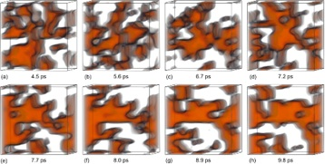

IEEE SciVIS
Contest 2012
Official Event of VisWeek 2012
Ferroelectric and polarization domains in barium titanate (BaTiO3)
-
•Detect and analyse phase transitions in computational material science!
-
•Dance with the atoms!
-
•Be a winner at VisWeek 2012!
The IEEE SciVis Contest 2012 is an official event of the IEEE VisWeek 2012.
The SciVis Contest 2012 targets the field of computational material science, in particular, atomic configurations. The goal is to devise a visualization that allows for exploring the phase transitions of a particular ferroelectric material when decreasing the temperature gradually.
Computational material science is an emerging interdisciplinary field of research. Its success is due on the one hand to the growing availability and performance of computational resources. On the other hand the development of new simulation strategies allows for a new type of simulations. The possibility of simulating phase transition is one of the major recent achievements. The detailed knowledge of the behavior of materials undergoing a transformation is relevant not only for basic research. This information is crucial for technological applications.
Ferroelectric materials are well known for their extensive
use as transducers, capacitors and recently as improved
memory devices. Among the most used materials, also
due to its robustness with respect to technical
manipulations and functional stability, BaTiO3
undergoes a series of phase transitions on decreasing
temperature, from a paraelectric cubic phase, to a
tetragonal, an orthorhombic, and, finally, to a
rhombohedral one.
A design approach to ferroelectric materials critically
depends on an accurate description of the microscopic
features associated with paraelectric-to-ferroelectric
phase transitions. The fine structures of domains,
domain walls, and domain boundary dynamics as well
as a precise understanding of local atomic
displacements can be accessed using adequate
potential models based on ab initio calculations and
advanced molecular dynamics simulations. For BaTiO3 a complex scenario of microscopic domains in the paraelectric (cubic) phase and in the ferroelectric (tetragonal) phase is obtained. The Visualization Challenge will address questions related to both the static and dynamic role of domain features, as well as their dependence on atom displacements.


Overview
© Gabriel Zachmann & Jean Favre. Web & data hosting courtesy of SDSC.
Last update: August 2, 2012
Days until
deadline
U Bremen